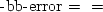
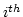
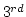
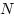
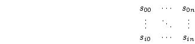

Next: Operators
Up: The Data Model
Previous: Base-Type Variables
Contents
Type constructor variables describe the grouping of one or more variables
within a data set. These classes are used to describe different types of
relations between the variables that comprise the data set. This information
can be useful to people who would like to understand more about the data set
than can be conveyed with implicit relations. It is also designed to be
useful to other programs/processes in the data access chain. There are six
classes of type constructor variables defined by the DAP: lists, arrays,
structures, sequences, functions, and grids. The type constructor classes
besides structure provide information that is used in the translation of
subsetting operations (hyperslabbing or selections and projections in netCDF
or JGOFS parlance, respectively). The types are defined as:
- List
- The List type constructor is used to hold lists of 0 or
more items of one type. Lists of int32, ..., grid are
specified using the keyword list before the variable's class. Access
to an element of a list is possible using one of the five operators given
in Table
![[*]](file:/usr/share/latex2html/icons/crossref.png) .
.
- Array
- An Array is a one dimensional indexed data structure as
defined by ANSI C. Multidimensional arrays are defined as arrays of arrays.
In addition to element access using subscripts enclosed in brackets (), an array may be accessed using only its name to return the entire
array or using a hyperslab operator to return a rectangular section of the
array. In the later case, the hyperslab is defined for each dimension by a
starting index, and ending index, and a stride value. Specifying a stride
 1 will cause the dimension to be subsampled by the stride value.
Table shows the syntax for array accesses including
hyperslabs.
In addition to its magnitude, every dimension of an array may also have a
name. It is possible to find the name for any given dimension (e.g., the
dimension) and thus write software which access the 
element of the dimension cast (See DODS--Client and Server Toolkit).
- Structures
- A structure is a class that conveys no relational
information and may contain several variables of different classes. It is
used to supply information to other parts of the data access and
translation system that may be useful in optimizing the access or
translation operations. The structure type can also be used to group a set
of unrelated variables together into a single data set.
- Sequences
- A sequence is an ordered set of  variables which has
several instantiations (or values). Variables in a sequence may be of
differing classes. Each instance of a sequence is one instantiation of the
variables. Thus a sequence can be represented as:

Every instance of sequence  has the same number, order, and
class of variables. A sequence implies that each of the variables is
related to each other in some logical way. A sequence is different from a
structure because its constituent variables have several instances while a
structure's variables have only one instance (or value). Because a sequence has
several values for each of its variables it has an implied state, in
addition to those values.
- Functions
- Functions are a subclass of Sequences and are used to
indicate that one set of variables has a functional relation to a second
set of variables. Variables in a function may be of differing classes. The
mathematical description of this functional relation is not
specified. Instead the function type is used to indicate that one of the
two sets constitute the independent variables and the other the dependent
variables. Typically, the variables defined by a function have more than
one instance--functions are similar to sequences but have additional
information about the functional dependency of variables.
- Grid
- A grid is an association of an dimensional array with
named vectors, each of which has the same number of elements as the
corresponding dimension of the array. Each vector is used to map indices of
one of the array's dimensions to a set of values which are normally
non-integral (e.g., floating point values). The (map) vectors may be
members of different classes. Grids are similar to arrays of base type
variables, but add named dimensions and maps for each of those dimensions.
Next: Operators
Up: The Data Model
Previous: Base-Type Variables
Contents
James Gallagher
2004-04-21